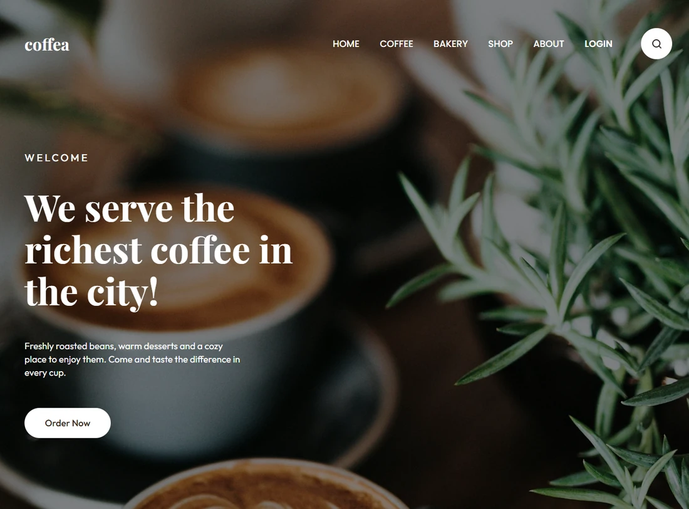

2026 · Sitio web responsive
Coffea — Coffee Shop

Landing page de cafetería maquetada a partir de un diseño de Figma, con componentes CSS y adaptación a distintas pantallas.
Aprendizaje: trasladar un diseño visual a una interfaz responsive y organizada.
Ver proyecto (abre una pestaña nueva)